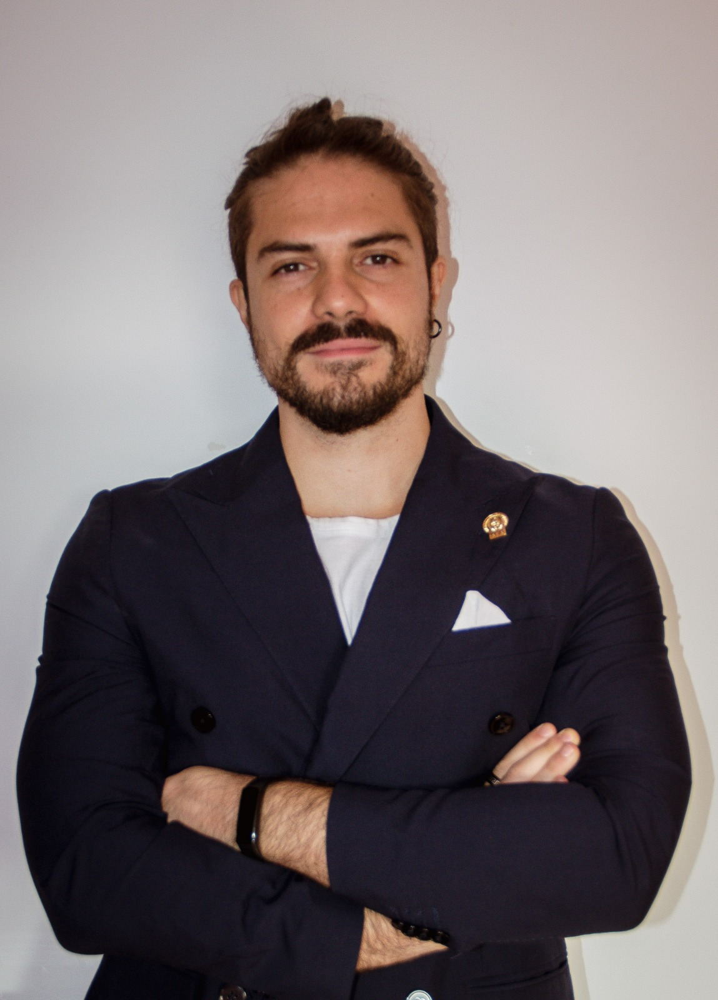

CALAMITA: Challenge the Abilities of LAnguage Models in ITAlian

Federico Borazio
PhD Student - Department of Enterprise Engineering / University of Rome Tor Vergata
Federico Borazio is a PhD candidate in the Data Science program at the University of Rome Tor Vergata , where he is a member of the SAG Art research group. His doctoral research is supervised by Roberto Basili and Danilo Croce.
His main research interests include Large Language Models fine-tuning and adaptation for downstream and knowledge-intensive tasks, question answering in the biomedical domain, retrieval-augmented generation, and multimodal dialogue systems. He has contributed to projects on LLM benchmarking, human-robot interaction, and AI applications for epidemic intelligence, publishing in venues such as ACL Findings, ECIR, LREC-COLING, and the Italian Journal of Computational Linguistics.
He is also part of the CALAMITA Data and Evaluation Team, contributing to the benchmarking of Large Language Models on native Italian tasks.
In addition to his academic work, he collaborates with Reveal S.r.l., an industry partner focused on AI and NLP driven solutions.
Currently, he is an Applied Scientist Intern at Amazon in Los Angeles, working on LLM experimentation and neural retrieval for local search projects with the Alexa Local Search team supervised by Alessandro Moschitti.
Publications
Training Multi-Modal LLMs through Dialogue Planning for HRI
Adapting LLMs for Domain-Specific Retrieval: A Case Study in Nuclear Safety
UniTor at BioASQ 2025: Modular Biomedical QA with Synthetic Snippets and Multiple Task Answer Generation.
Challenging the Abilities of Large Language Models in Italian: a Community Initiative
MM-IGLU-IT: Multi-modal Interactive Grounded Language Understanding in Italian
Semi-automatic topic discovery and classification for epidemic intelligence via large language models
ArTLLaMA: Adaptating LLaMA to Performative Art Applications
Intelligent Natural Language Processing for Epidemic Intelligence
UniTor at DeSegMa-It: Analyzing Supervision and Encoder Representations for Italian Machine-Generated Text Detection
UniTor at PFB: Constrained Agentic Prompting and Self-Consistency for Financial Multi-Choice QA
Reveal Industry Projects Collaboration
Matchmaking for Innovation - 2024/25
Simple Knowledge Organization Systems for the Decommissioning of Nuclear Facilities - 2024
Italian Network of Epidemic Intelligence - 2023/24
Teaching Assistant
Contacts
- 📧 Email: borazio@ing.uniroma2.it
- 🏛️ Office: Via del Politecnico 1, Information Engineering Building, Block D, 2nd Floor, Room 20